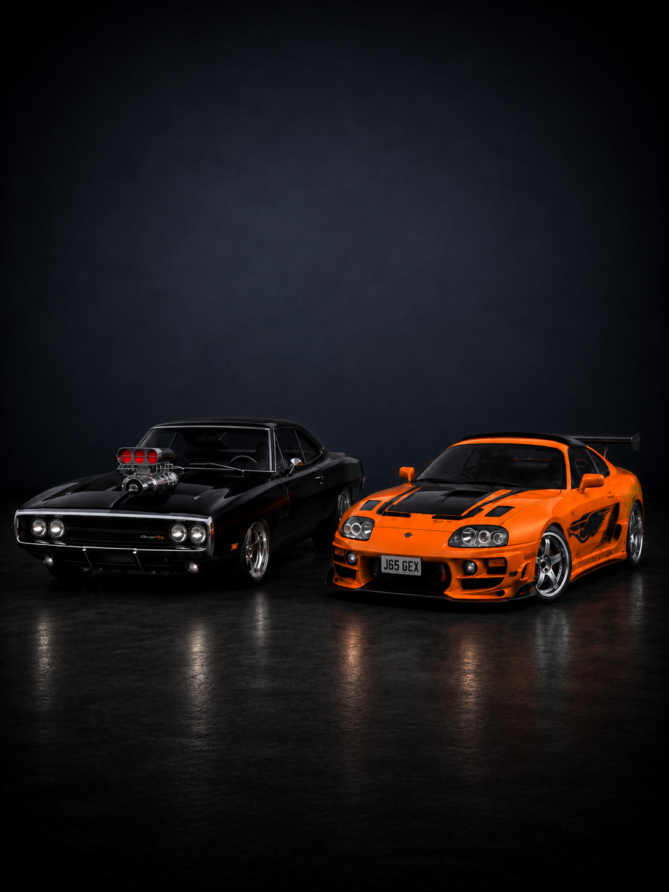
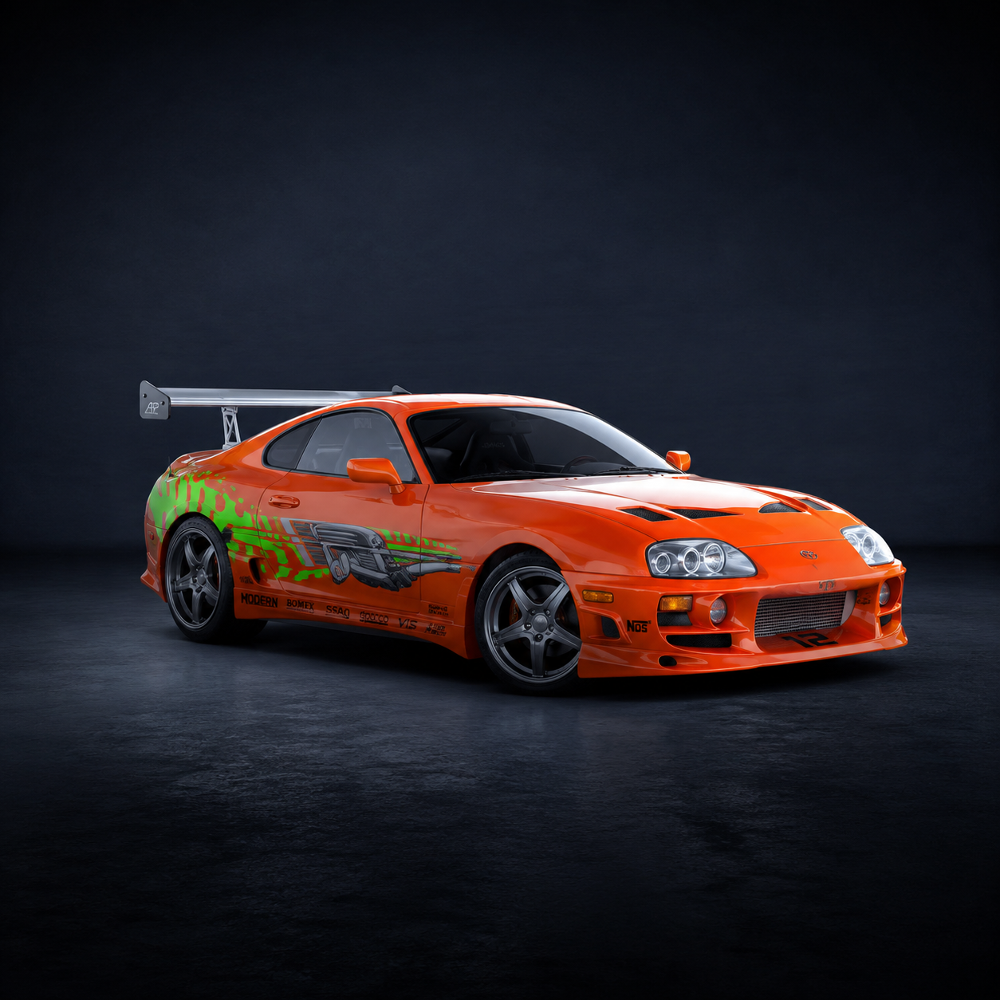
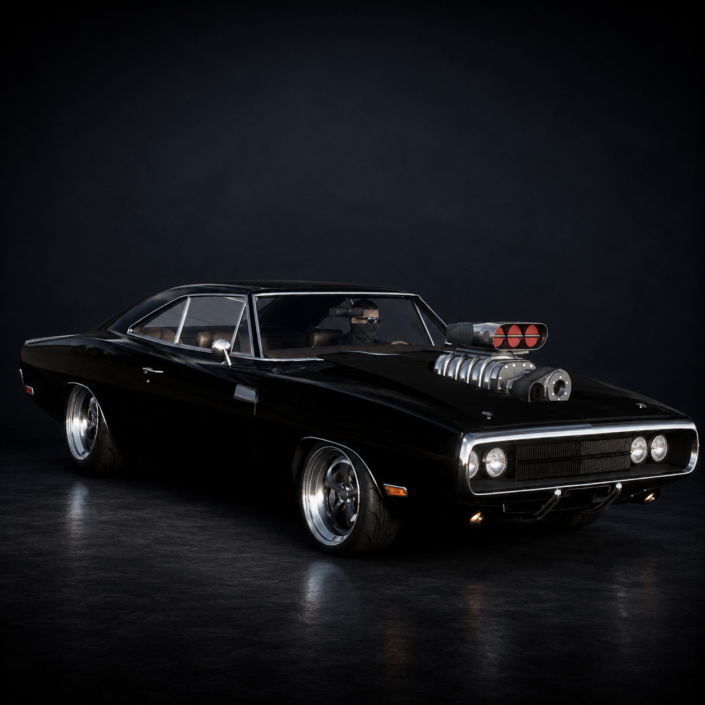
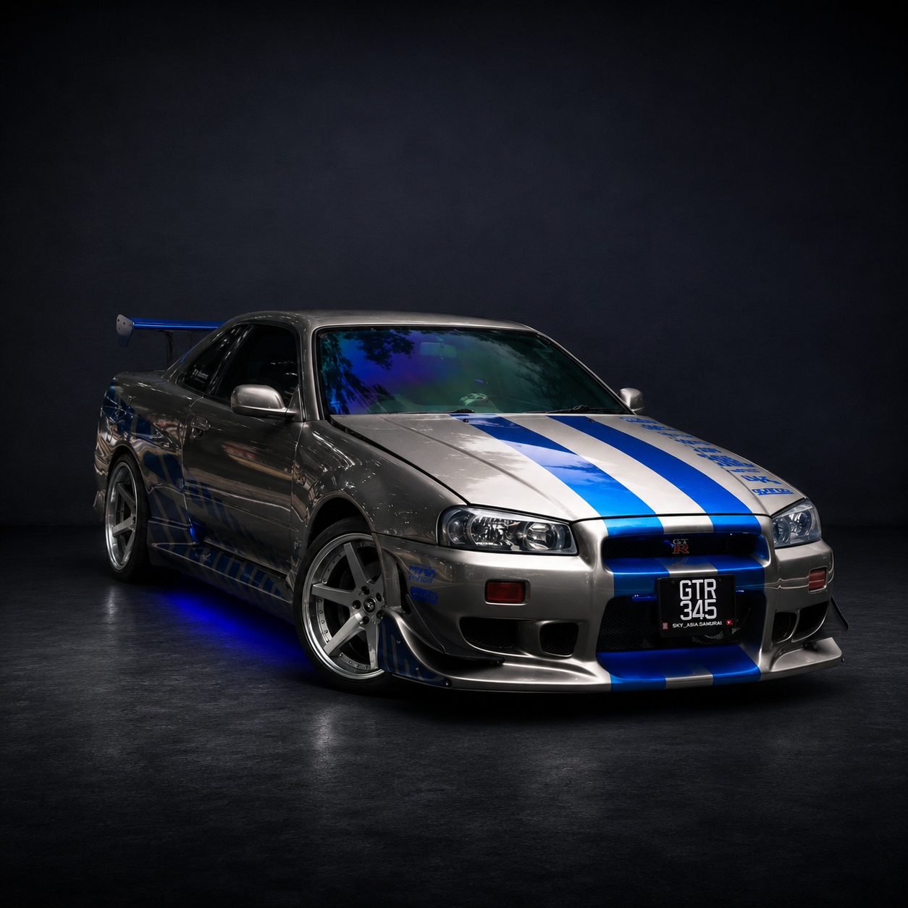
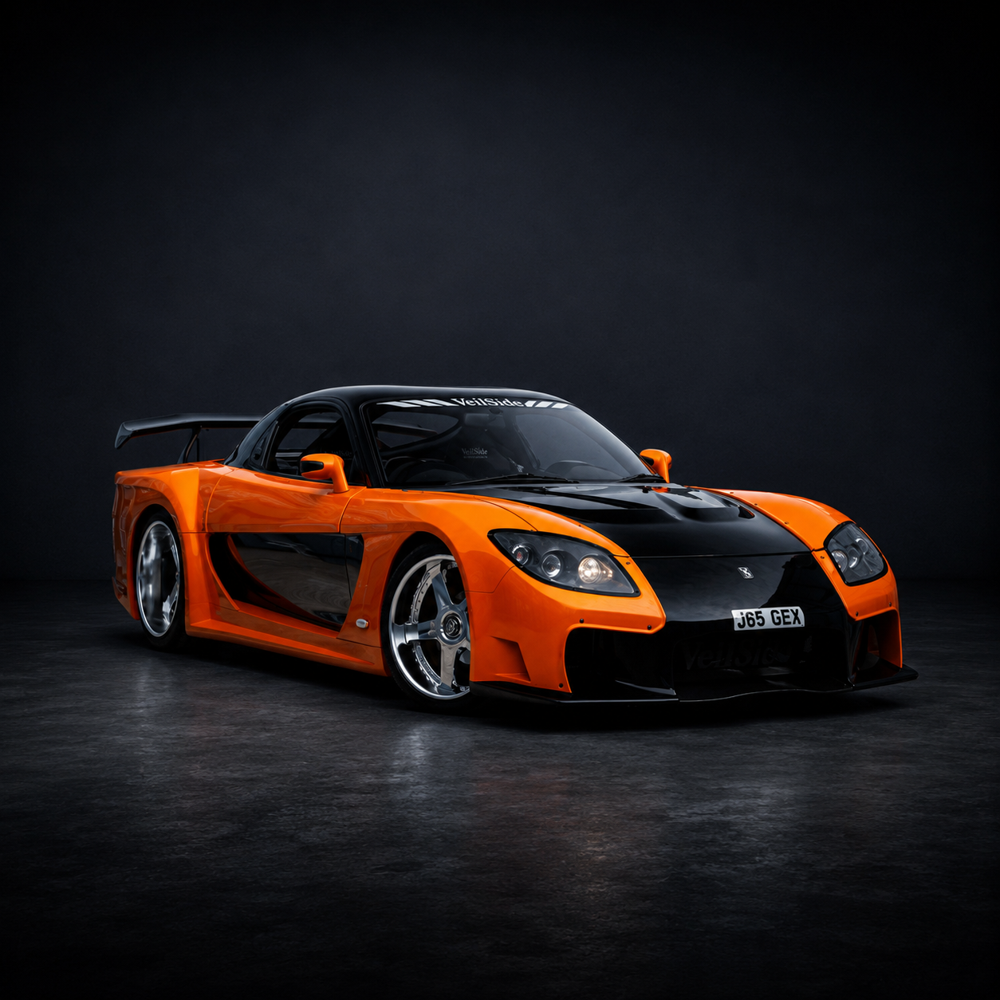

Curiosidades, segredos de bastidores, carros lendários e detalhes que ajudam
a explicar como Velozes e Furiosos saiu dos rachas de rua e virou uma das
maiores franquias de ação do cinema.

O CARRO DE 10 SEGUNDOS
No primeiro filme, o Toyota Supra de Brian ficou conhecido como o carro
que pagaria a dívida com Dom. Ele se tornou um símbolo da saga, misturando
preparação, visual chamativo e a cultura dos carros japoneses.
Já o Dodge Charger 1970 de Dominic Toretto representa o lado mais bruto
da franquia: motor grande, arrancada agressiva e ligação emocional com a
família Toretto.
Muitos carros usados nas filmagens não eram exatamente os modelos
“perfeitos” mostrados na história. Vários eram cópias preparadas para
cenas específicas, colisões, saltos ou tomadas de velocidade.
SEGREDOS DOS BASTIDORES
O primeiro filme foi inspirado pela cultura real dos rachas de rua e carros
modificados dos anos 1990 e 2000.
O cofre de Operação Rio teve versões reais construídas para as
cenas de perseguição.
Vin Diesel não protagonizou o segundo filme, mas voltou como peça central
da franquia depois.
Han se tornou tão querido pelo público que sua linha do tempo foi
reorganizada para mantê-lo na história.
A despedida de Brian em Velozes e Furiosos 7 virou uma das cenas
mais emocionantes da saga.
A franquia começou com foco em carros, mas passou a misturar espionagem,
tecnologia e missões impossíveis.
O Nissan Skyline de Brian é um dos carros mais lembrados pelos fãs,
principalmente pela ligação com Paul Walker.
Letty voltou à história depois de uma revelação no final de
Operação Rio.
CARROS QUE VIRARAM ÍCONES

Toyota Supra MK4
O Supra laranja dirigido por Brian O'Conner tornou-se um dos carros
mais famosos do cinema e um verdadeiro ícone da cultura JDM.

Dodge Charger 1970
O muscle car de Dominic Toretto representa força, tradição e a ligação
emocional da família com os carros.

Nissan Skyline GT-R
Um dos carros mais marcantes de Brian O'Conner, lembrado pelo visual
azul e prata e pela ligação com Paul Walker.

Mazda RX-7
O RX-7 ficou famoso pelo design agressivo, pela cultura JDM e pelas
cenas de corrida e drift.